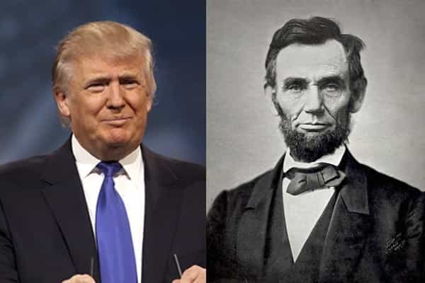
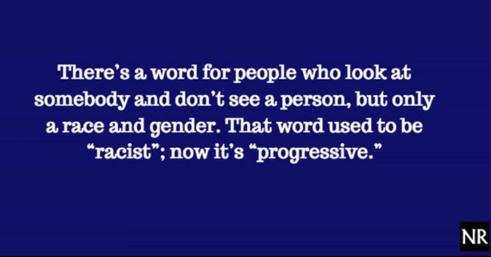
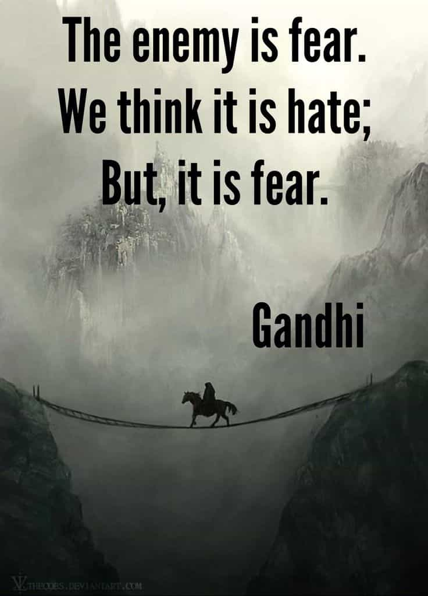

The people of a nation must have common ideological, economic, political, and social ideas they agree upon or the nation, the civilization, will eventually die. Civil war is coming to the United States. Division, contention, fear, and silent invasion are being used to “reshape America.” The civil war that will emerge in the United States will not be like the previous one. This war will be for the mind and heart of the United States. It will be for the soul of the United States. What will we do when this occurs and what will be rebuilt.
In 2016 Roosh wrote an article titled, The Culture War Is Being Transformed Into A Hot War. Roosh discusses the methods that are being used to transform the culture war into a hot war. Even the Huffington Post ran an article in 2016 titled, The Coming of America’s Second Civil War. The author, a Rev. Dr. Susan K. Smith, paints the coming civil war as the result of white Americans. While she may believe the lies she is speaking and writing, more than likely she failed to realize she is part of the elitist machine which is being used to create contention and divide the United States.
Civil wars are over ideological and social issues. Economic and political issues are extensions of ideological and social issues. As real men, we will continue to have less and less in common with soy boys and progressives. The divide between the people that support the U.S. Constitution and those that want a New World Order is growing.
What does this have to do with us men? Men are the ones that establish order. Men establish civilization and build complex civilizations. Women have a much harder time establishing and completing group functions and tasks without 100 percent consensus within the group. As our civilization crumbles and eventually falls, new order will come primarily from the masculine, from men.

The Election of Donald Trump and Abraham Lincoln
In the years before the 19th Century U.S. Civil War, there were constant clashes between pro-slavery and anti-slavery forces. We are seeing constant clashed over what is termed Pro-Trump and Anti-Trump forces. Brietbart News has a list of over 500 acts of MSM sanctioned violence against Pro-Trump supporters.
In 1860 free state voting populations were larger than those of slave states so these states, as a total, had more Electoral College votes than slave states. One of the catalysts to the U.S. Civil War was the election of Abraham Lincoln over John C. Breckinridge. Lincoln took office in January 1861 and the war started in April of 1861. Abraham Lincoln was not on the ballot of ten slave states but still won the election of 1860 because he won the largest number of Electoral College votes. Seven of these slave states, unwilling to accept the results of the election, decided to secede from the United States.
Several states considered seceding from the United States over the 2016 presidential election. Oregon, California, and Silicon Valley threatened to secede after Hillary lost. Texas was discussing secession if Trump lost. Canada offered to make several U.S. States part of Canada if they left the United States.
Since the election of Donald Trump to President of the United States, we have seen an escalation of violence. Therapists have increased business because progressives did not have their way in the 2016 election. Many progressives are unable to cope with reality and instead choose to live in a fantasyland. Even before the 2016 election, we witnessed how nasty, aggressive, despicable, and violent progressives have become and these behaviors have escalated since Hillary Clinton lost the 2016 election.
The election of Donald Trump has brought to the fore the stark difference between ideological, economic, political, and social ideas. His election exposed many politicians as the traitors they really are.

We are seeing more and more allegation of electoral fraud. Several U.S. Cities are allowing non-citizens to vote in local elections. Giving non-citizens the ability to vote in U.S. elections is the same as allowing a foreign power to elect government officials. A foreign nation could easily flood the U.S. with people to vote for certain candidates drastically reshaping the U.S. political landscape. The Department of Justice recently filed charges against 19 people that were not U.S. Citizens for voting in the 2016 federal election.
Providing non-citizens the ability to vote also makes it easier to commit electoral or voter fraud. Judicial Watch is currently suing or has sued California, Maryland, Florida, and eight other states over dirty or inaccurate voter records. These states have areas with more voter registrations than eligible voters. The National Voter Registration Act of 1993 requires states to take steps to remove ineligible registrants, to protect the voting process, and to turn over relevant records and information for inspection upon request. Several progressive groups have sued in some states to prevent the implementation or execution of those steps stating the requirements to clean up voter registration rolls is harmful to minorities.
Contention as a Destabilization and Fear Tactic
The elite are working hard to divide people along every possible factor. Sex, race, religion, wealth, speech, education, “equality”, and any other factor that can possibly be exploited to divide the people are being used. The goal is the complete overthrow of all liberties of all nations, and for that to happen the U.S. must be fundamentally be reshaped or destroyed. History is and will be rewritten to attain this goal. The deep state, the mainstream media, and other elite outlets, organizations, and front men and women are being used for this purpose.
We can see forces that are seeking to divide and conquer. Forces that teach men to be weak and women to be whores. This is a strategy of contention, of never-ending conflict. These same forces seek this division to control the people and reshape the United States eliminating all of our freedoms. In the words of Barack Obama, to “Reshape America”. The removal of due process, the attacks on free speech, and the right-to-bear arms are steps in the direction of reshaping of the United States. Economics will one of the primary forces used to reshape the United States.
There are more divisions now and larger divisions in the United States than in the 19th Century. The philosophical lies of progressives did not have a strong following until the 20th Century. We are witnessing the division and the weakness these progressive ideologies create. Progressive ideologies make people weak and afraid.
One of the goals of the division is the elimination of due process. The elimination of due process subverts justice. The elimination of due process creates an environment where someone is guilty until proved innocent. The #MeToo movement, political correctness, the Title IX tribunals on college campuses, the passing of judgement in the court of public opinion, and the idea that a woman should automatically be believed because she is a woman are all designed to undermine justice for everyone.
During World War I, Germany offered financial and military support to Mexico to invade the United States to keep the U.S. out of the war and act as a mediator between Germany and Japan. Mexico rejected the proposal because of Mexico’s own inner turmoil and because the Mexican leadership realized they would not be able to control a population armed better than many other populations.
The actions to eliminate the second amendment are part of the necessary steps the elite desire for control. People that are not afraid and stand up for themselves are threats to the elite and progressives. The actions are aimed at scaring the weak-minded, the emotional. Only the weak fear guns and other means of self-defense.
Mike Adams, a professor in the University of Narcissistic Criminals System (his words), wrote an article about the lack of maturity in younger generations. In this article, he also discusses how campus speech codes enable the aggressor and violence. People that are afraid of speech they do not like or with which they disagree. People afraid of ideas and of thinking and reason. Colleges and society are creating weak adults, and weak people are capable of violent and aggressive behavior because they act out of fear.

Progressives seek to literally, make people afraid of other ideas, and by extension, speech. The first and second amendments are pivotal to the United States and clearly distinguish the U.S. from other nations of the world, past and present. Words have power and ideas are much harder to kill so progressives are using their self-appointed Ministries of Truth: Apple, Google, YouTube, Facebook, Amazon, CNN, NBC, ABC, New York Times, etc. move in the direction of reshaping America.
The self-appointed Truth Ministries have become a de facto fourth branch of government. We are seeing these self-appointed Truth Ministries silence any voices with which they disagree. This has the effect of dividing people into “tribes” and “classes” based upon progressive ideological “protected characteristics.” This psychological warfare tactic effectively reduces people to mental slaves because these “protected classes” believe they will always be oppressed without progressives and the progressive ideology and thus, a psychological dependence is created. The creation of this psychological dependence is the core of progressive racism and oppression.
Destroying confidence in the U.S. Constitution destroys the effectiveness of government and the rule of law. Justice is denied to a person based upon lack of money, lack of access to inner circles, lack of “protected class” status, or perceived privilege. Without law society deteriorates to tyranny and mob rule. Without confidence in the U.S. Government, the government is effectively destroyed and will be replaced by factions that will struggle for control.
Silent Invasion
Mass immigration is being used to create additional destabilization. When speaking with American Citizens, most Americans are not opposed to legal immigration; they are opposed to illegal immigration. Legal immigrants assimilate into their host culture. Illegal immigration is being used as a way to silently invade the U.S. Many of illegal immigrants do not realize they are being used as pawns. “Refugees” can be in either category. Refugees, if willing to abide the law and become citizens, should be welcomed. If they arrive to take advantage or to plunder they are invaders.
The difference between an immigrant and an invader is the immigrant is willing to follow the laws of the nation in which he residing, the invader has no regard for law. The invader comes to exploit us, to take from us, to use us. There is no such thing as a law abiding criminal. Notice how the majority of politicians and business leaders do not advocate for illegal immigrants to learn about the founding of the U.S., the liberties afforded to U.S. Citizens, and become U.S. Citizens. When political and business leaders do not encourage immigrants to become U.S. Citizens they are importing people they want as slaves and a silent invasion force to “reshape America.”
“Catch and release” fulfills three purposes. The first purpose is to destabilize society so people will accept the elimination of liberty for security because some criminals are released into the population. The second is to ensure the illegal immigrants remain to as competition for jobs with American Citizens to drive down wages. The third is to displace U.S. Citizens and make them aliens in their own country.
Read More: Donald Trump And His Supporters Are Fighting A Rigged System